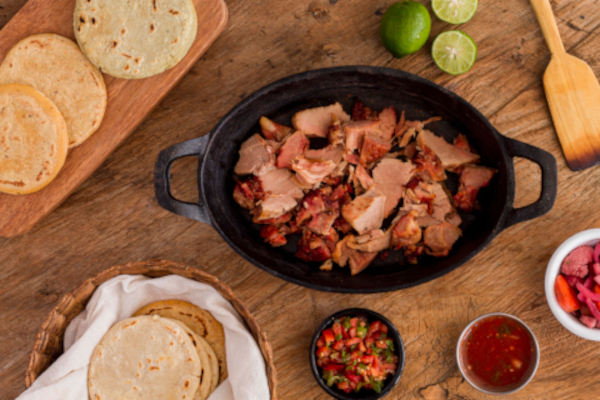

Pork Carnitas
Delicious Mexican-style pork Carnitas!

designed
by Freepik - Magnific.com
Description
Pork Carnitas is a savory slow-cooked Mexican dish. It's prepared with citrusy & many flavourful spices.
Back to Homepage
Ingredients
- 2.2lbs Pork Shoulder, do NOT trim fat
- 1/2tbsp Dried Oregano
- 1tsp Ground Cumin
- 4tsp Salt
- 3tsp Accent, MSG
- 1tbsp Olive Oil
- 1 medium Onion, chopped
- 4 cloves Garlic, diced (can be chunky)
- 1 Jalapeno, diced (remove seeds if preferred)
- 1 Orange - juiced
- 1/2 Lime - juiced
- 1c water (can replace with pork broth if desired)
- 2tbsp oil - for frying (use high smoke point if available)
Steps
- Combine all ingredients in a slow cooker.
- Cook on low for 6-8 hours or until the pork is tender.
- Shred the pork with a fork.
- Heat oil in a skillet over medium-high heat.
- Fry the shredded pork until crispy on the outside.